Вчера вернулись с младшей внучкой из Борисоглебска. Конечно, каждый день проводили на окружающий город реках: на Хопре и на Вороне. Нельзя сказать, чтобы рыбалка в эом году была отменной, но представители практически всех местных хищников побывали в нашем садке. Конечно же, щуки. Как обычно, те, что сошли с крючка, были значительно больше тех, которые попались:
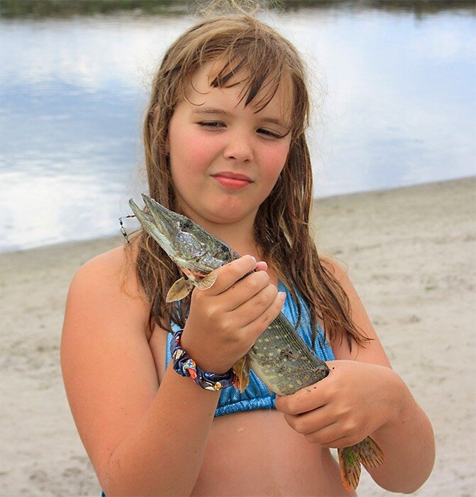
Приносили домой и судаков, причем судак в Хопре стал совсем не экзотическим видом, поймать его может даже рыбак-дилетант, вроде нас с Соней:
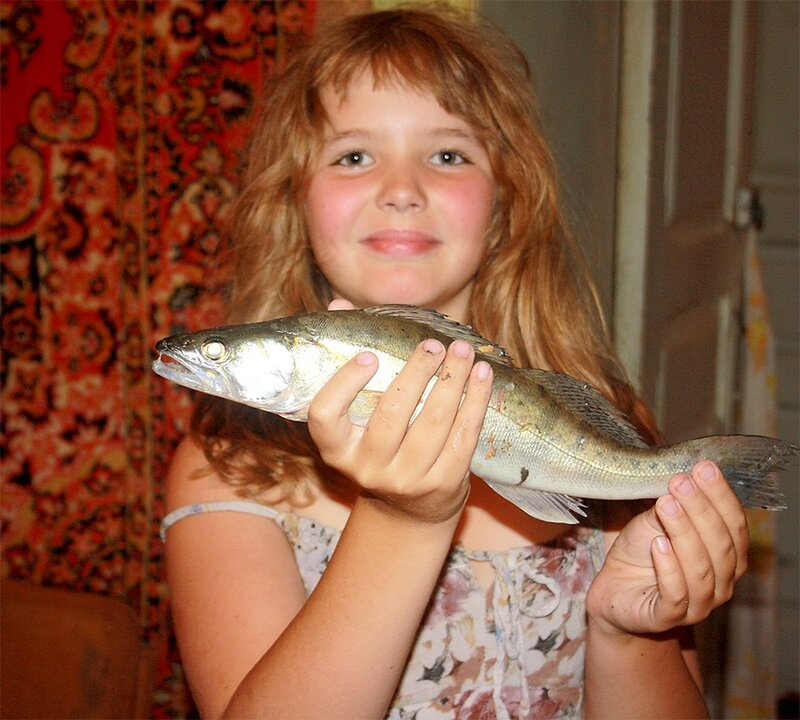
Побывали и на известной мне с детства сомовой яме на Вороне:
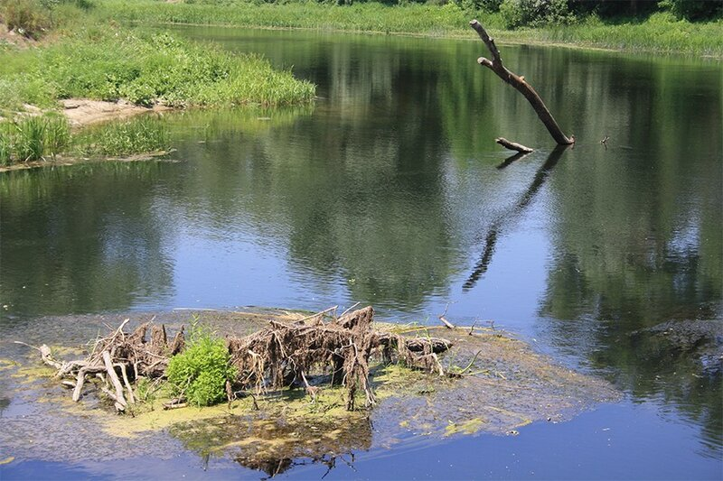
Но, увы, днем сомы не ловятся,
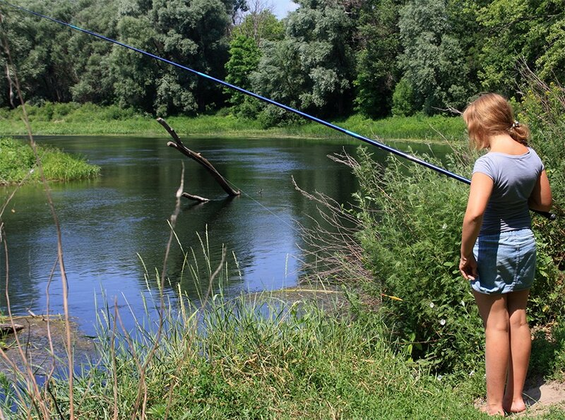
а на утреннюю зорьку мы отправились на Хопер:
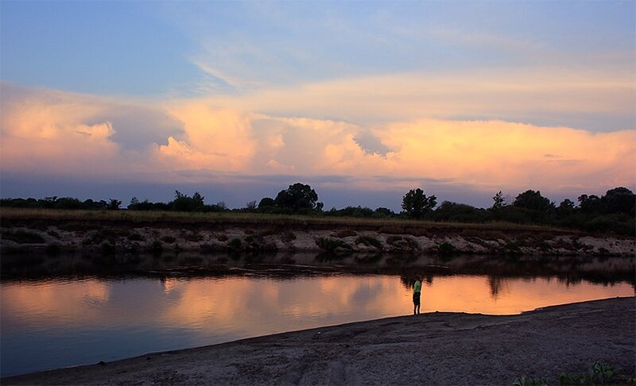
Хопер по-прежнему красив
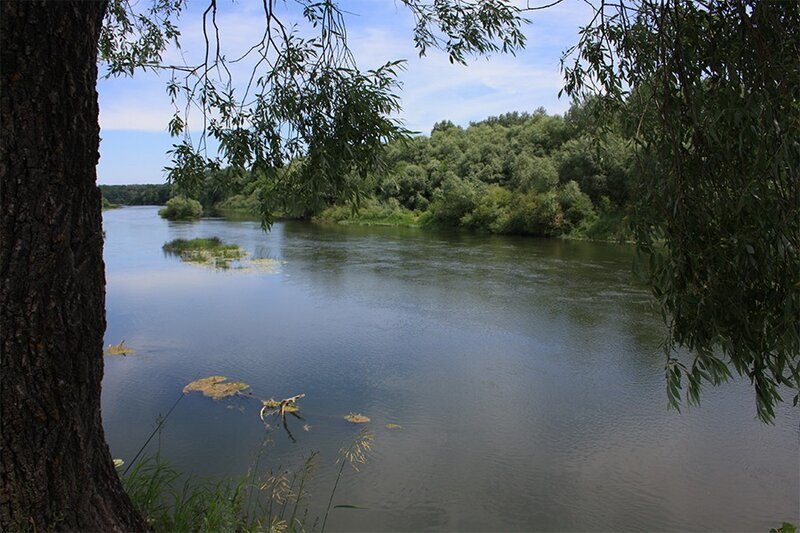
и рыбачить на нем одно удовольствие:
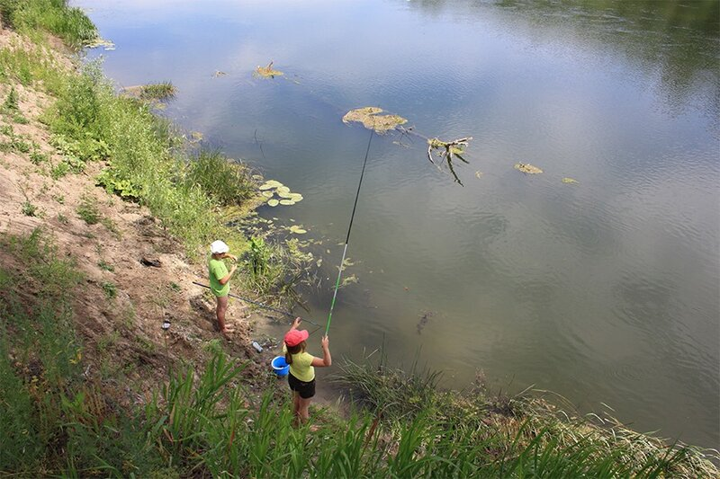
Законную гордость вызывает пойманный подлещик
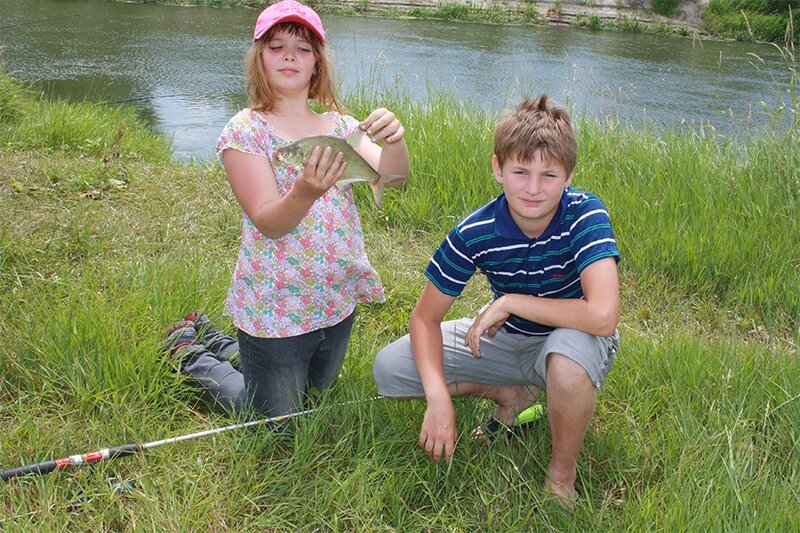
Хотя для юных натуралистов интерес представляют и лягушки
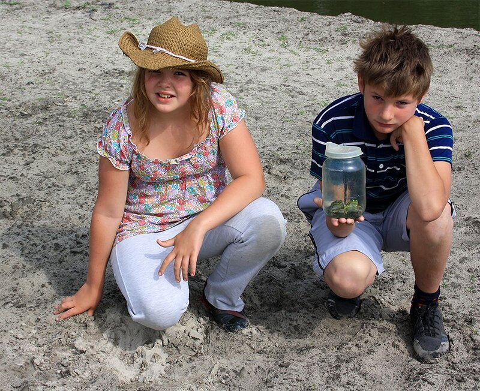
и представители пресмыкающихся
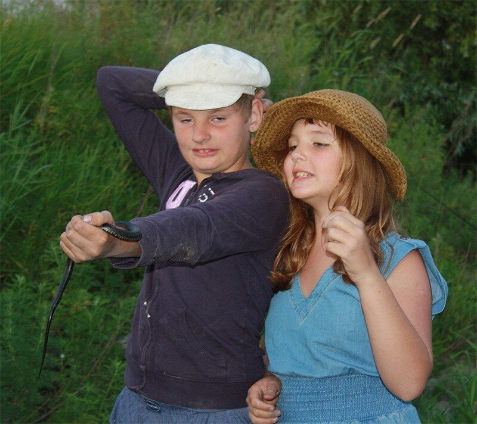
Так что Том Сойер и Гек Финн с их дохлыми кошками отдыхают.
Наши рыбаки не уступают местным не только своим внешним видом, но и результатами ловли.
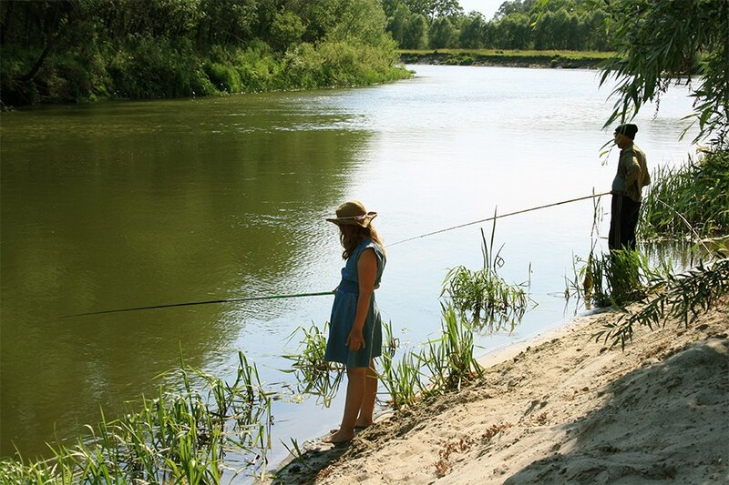
Никакая рыбалка не обходится без ласточек-береговушек
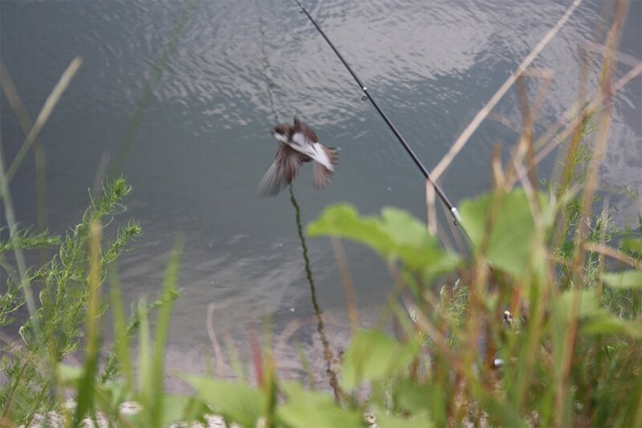
и без сюрпризов погоды: тучи над городом означают и скорую грозу на реке
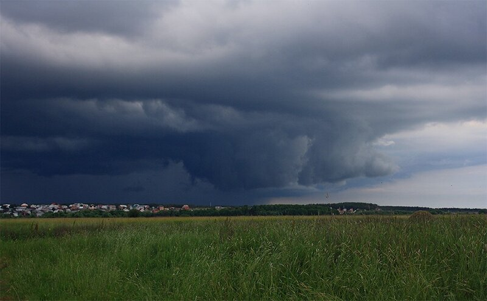
В перерывах между рыбалками отдыхали на местной базе олимпийского резерва
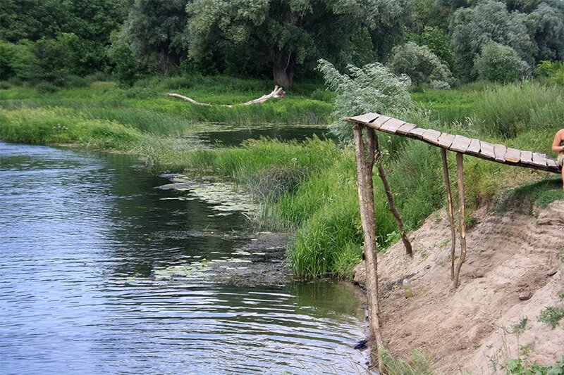
и наблюдали за тренировкой будущих олимпийцев
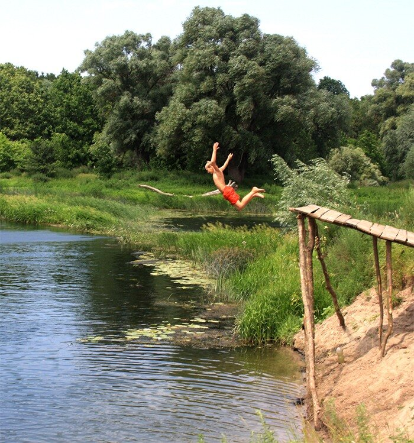
Посещали также местный городской парк
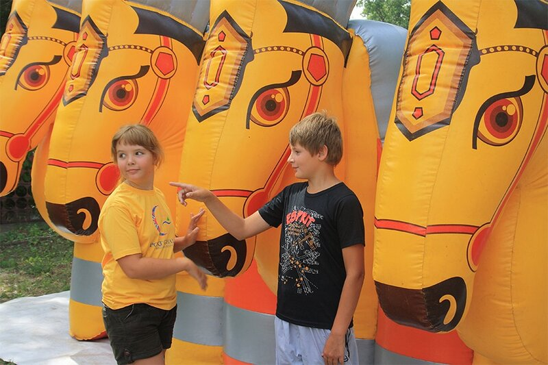
На обратном пути остановились отдохнуть в Тамбовской губернии
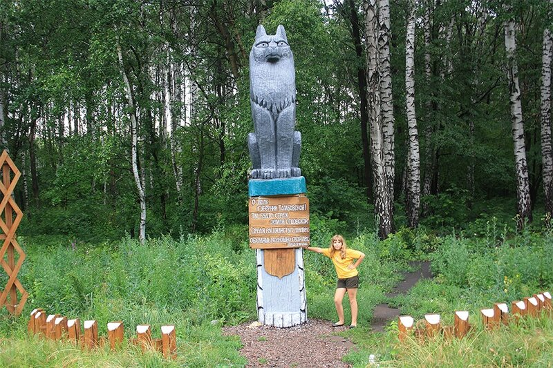
где открыли для себя автора первой притчи о товарище всех преступников - тамбовском волке:
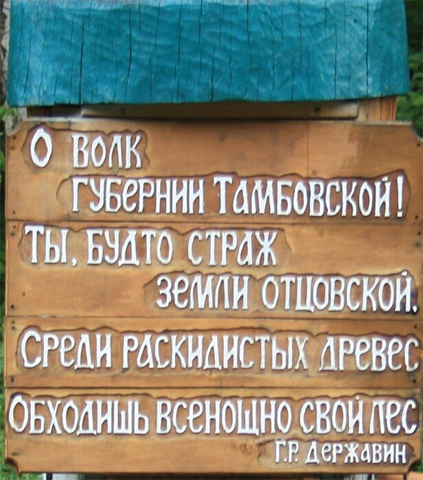
Наметили еще одну поездку в Борисоглебск на август, но человек предполагает, а бог располагает. Доживем до августа.